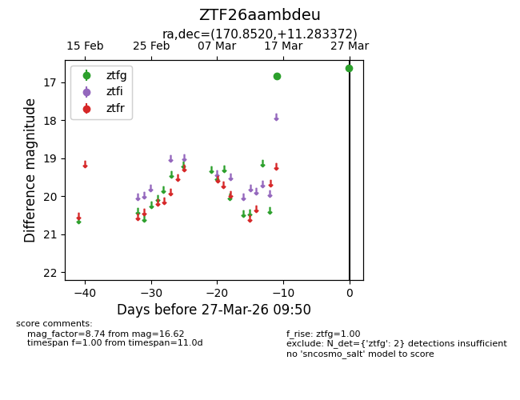
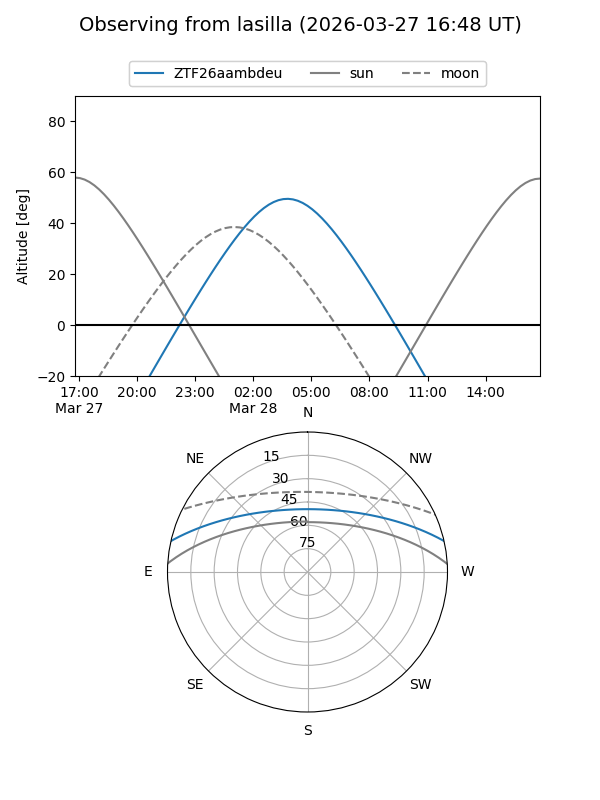
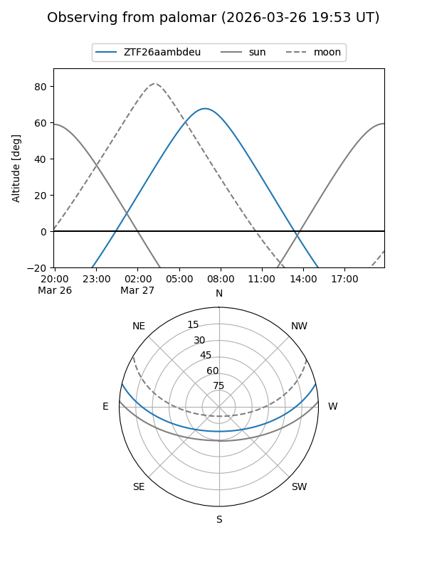

ZTF26aambdeu
Target ZTF26aambdeu at 2026-03-27 09:53
Aliases and brokers:
FINK: link
Lasair: link
ALeRCE: link
alt names
ZTF26aambdeu (ztf,fink_ztf)
Coordinates:
equatorial (ra, dec) = 170.8520,+11.28337
equatorial (HMS+DMS) = 11:23:24.47,+11:17:00.14
galactic (l, b) = (246.1292,+63.94968)
Flags:
Photometry:
last ztfg=16.62
2 ztfg detections
Lightcurve

Visibility


Additional plots